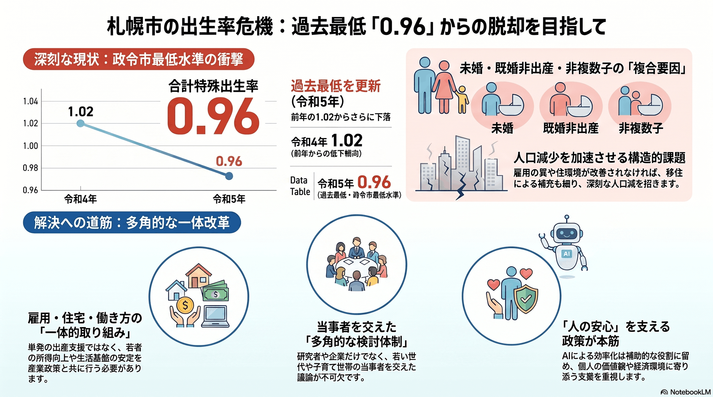

人口減少・高齢化
世代単位
政令市最低水準の出生率
合計特殊出生率が過去最低を更新し、政令市の中でも著しく低い。

背景
札幌の出生率の低さは「結婚する人が少ない・結婚しても子を持たない・持っても1人」という複合要因による。雇用の質や住環境とも結びついた構造問題で、移動による補充が細れば人口減を加速させる根因となる。
主要データ
| 合計特殊出生率（令和5年） | 0.96（過去最低） |
|---|---|
| 前年（令和4年） | 1.02 |
事実
- 札幌市の令和5年の合計特殊出生率は0.96で、前年の1.02から低下し過去最低となった。
- 未婚・既婚非出産・非複数子の影響が大きく、第二子以上の有配偶出生率は政令市でも最低水準とされる。
解釈
出生率の低さは結婚・出産・両立支援の各段階の課題が積み重なった結果であり、単発の施策では動かない。雇用・住宅・働き方と一体で取り組む必要がある。
提案
- 若者の雇用安定と所得向上（産業政策と一体で）。
- 結婚・出産・両立を阻む要因への多角的な対策（効果発現は長期）。
検討体制・メンバー
札幌市まちづくり政策局（未来創生）と子ども未来局が中心。検討会には人口学・社会学の研究者、企業・労働の代表、保育・教育の現場、若い世代・子育て世帯の当事者を入れ、雇用と暮らしの両面から議論することが欠かせない。
AIノート
AIの貢献度は小。要因分析や施策効果の検証、相談・手続きの利便化には役立つが、出生は個人の価値観と経済環境に深く依存し、AIで直接動かせるものではない。過度な期待は禁物で、人の安心を支える政策が本筋。